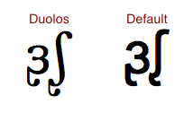

Typing the International Phonetic Alphabet
Typing the IPA requires a keyboard layout that will give you access to all the required letters and diacritics. It might also help to have a special IPA font, as it will look much prettier. Observe:

Some available IPA fonts
-
LaserIPA is $99.95, so for my purposes (just for fun, for now at least) this isn't practical.
-
Duolos is one of the few free IPA fonts provided by SIL. This is the one I chose.
-
Gentium is another SIL font.
-
Charis SIL, as you can guess by the name, is yet another SIL-provided font. I'm beginning to like these SIL guys!
How to install a font on Mac
- Download one of the above fonts (or any other font)
- Open your downloads folder and find the font file
- Double click it to open a little window that has an "Install Font" button
- Click "Install Font"
- Now go check out your new font in Word or Pages! It'll be available in any application on your computer. On Mac, there's an app called Font Book where you can see all the fonts available on your computer.
Available IPA keyboard layouts
- Keyman for Windows costs $24 (Light) or $69 (Professional). I don't use Windows, so I don't know much about this one. I came across it a lot though, so I think it's pretty standard.
- IPA MSKLC Keyboard is a free alternative for Windows.
- I'm using the IPA Unicode Macintosh Keyboard, and it seems good. There are quite a few complex key combinations required to type all the different symbols, but at least I can type them!
How to install a keyboard layout on Mac
- Download one of the above keyboard layouts (or any keyboard layout)
- Open Finder, and click on Go->Go to Folder...
- Type /Library/Keyboard Layouts
- Drag your .keylayout file into this folder
- Open System Preferences, and go to "Keyboard"
- Go to the "Input Sources" tab
- Click the "+" on the bottom left to add a new input type
- Scroll down to "Others", and find your new IPA keyboard layout (or if you installed a layout for a different keyboard, you might find it somewhere besides "Others")
- Now if you have checked "Show Input menu in menu bar", you'll be able to go to the top left of your screen (by the time) and under the flag icon, change your keyboard to your new one. Good job!
Web Fonts
I previously wrote that writing the IPA on my website was going to be a problem because the characters wouldn't display unless you had the font on your computer. That's incorrect, as you can see on a random Wikipedia page, they show the IPA transcription and that presumably works for anyone.
So I'll be able to write the IPA, as you can see here: ᶚᶘ
But if I want it to look prettier, like the above image, I can use web fonts to do so. This means that I can include a font file on my site, and then use it. To do so, the font file is sent to anyone viewing the page, so this does become a little more complicated with licensing.
Luckily for me, the people at SIL are awesome and provide their Duolos font for the web too! Look how much prettier it looks when I use that: ᶚᶘ